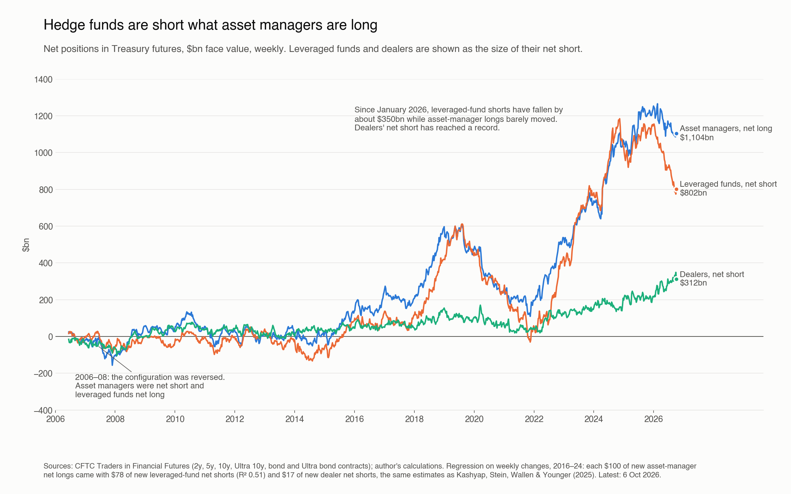
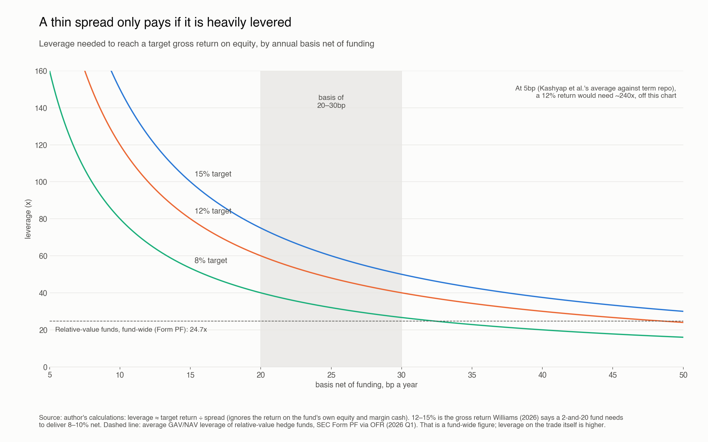
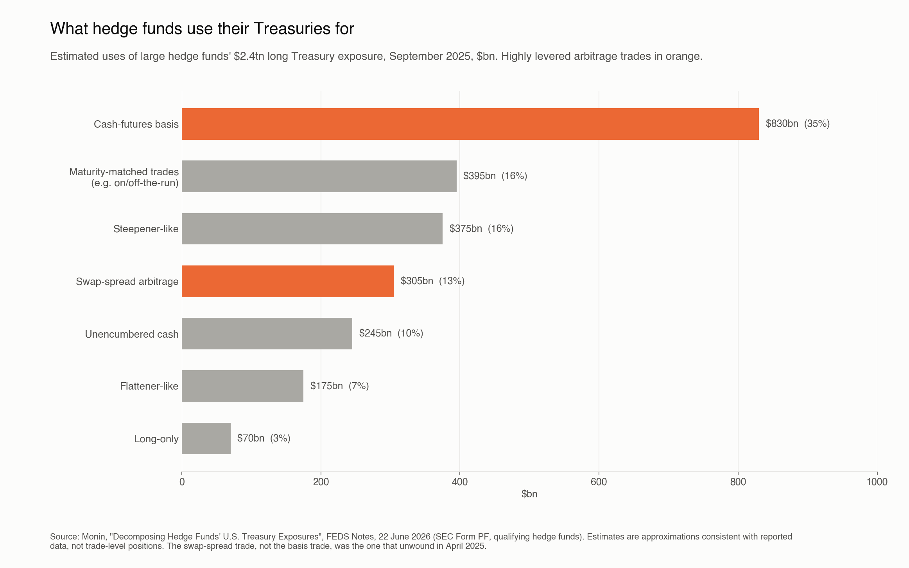
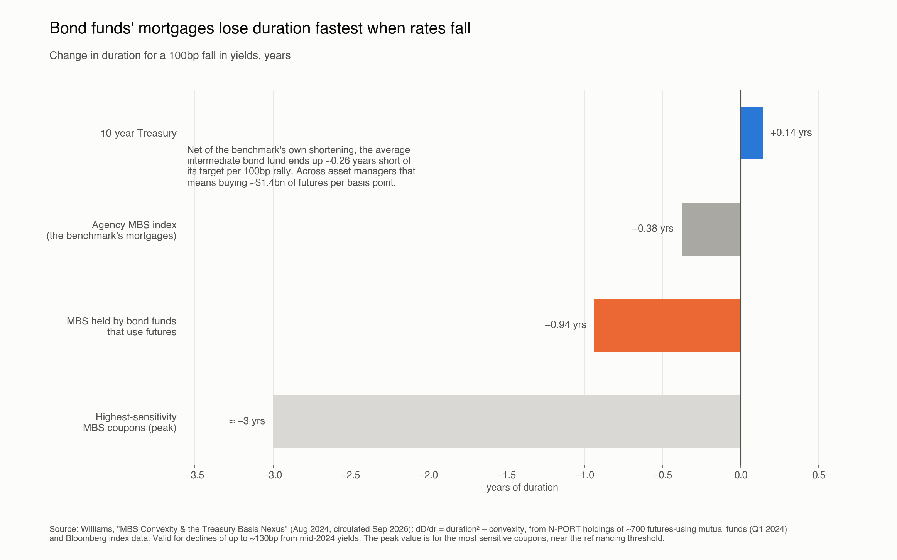

In this note, I’ll give i) an overview of the basis trade, ii) an explanation of why such a sustained basis arises, iii) why it poses risks to financial stability, and iv) a proposal to “end” or “endogenize” the basis trade.
There is a structural misalignment in the US Treasury market between how duration is issued and how institutional demand for it is serviced.
Institutional investors and asset managers (AMs: bond funds, pension funds, insurers) need a certain amount of interest rate (duration) exposure. Over the past decade they have shown a strong appetite for duration exposure via US Treasury futures. This demand is around $1.1tn in underlying net notional value (CFTC Traders in Financial Futures, October 2026).

AMs prefer to meet this duration need synthetically (through derivatives) because they want their cash to go into higher-yielding assets (mortgage bonds, credit, etc.).
Such a large one-sided demand has pushed futures above their fair value implied by cash-and-carry. This gap is the “basis”. AMs largely don’t mind the spread they themselves generate, because it is tiny next to the extra yield they earn on mortgages and credit (the January 2024 TBAC presentation puts the cost of replicating Treasury exposure with futures at about 0.45% a year over 2018–23, which most spread assets easily cover).
This mispricing has attracted arbitrageurs looking to profit from the spread. Because banks’ leverage regulations have been more restrictive since the financial crisis, hedge funds have stepped in to provide (sell or rent out) their balance sheet space for this capital-intensive trade.
A hedge fund: i) sells the future, ii) buys the “cheapest-to-deliver” cash Treasury (the cheapest bond that can be delivered into that future), and iii) borrows almost the full price of the bond overnight in repo, pledging the bond itself as collateral, often with no haircut. At expiry, it delivers the bond into the future and the two prices converge. The profit is the amount by which the futures price exceeds fair value, minus the repo cost.
The trade is DV01-neutral (if yields rise, the fund loses on the bond but gains the same on the short future). The bet is that the spread converges (and, crucially, that the fund can keep the position funded until it does).
Because the spread is thin (roughly 20–30bp a year), hedge funds leverage it heavily, typically 20–40x and sometimes more (Williams). The Fed found that 74% of hedge funds’ Treasury repo borrowing was done at zero or negative haircuts at the end of 2022.

The Federal Reserve and other authorities have been watching this trade closely since March 2020, given the size it has grown to and because it has amplified Treasury market stress in the past. The Fed estimates the trade at about $830bn in September 2025, roughly double its early-2020 peak (Monin, 2026).
Additionally, it is only a small group of pods at multi-managers and a few fixed-income relative value hedge funds worldwide that take on positions as large as AMs’ entire futures exposure. The 50 largest hedge funds account for about 90% of hedge funds’ Treasury exposure.

Why do AMs have such appetite for duration?
There is no obvious consensus. Asset managers can demand long futures positions for the same reasons other investors do:
- Active rate views (long duration, steepeners)
- Duration matching (using synthetic duration to offset lower-duration assets and match benchmarks)
- Liquidity management
The prevailing narrative is the following: managers have a duration target that they can’t easily move (set either by a benchmark or by their liabilities), and they want to put their cash into assets yielding more than Treasuries (mainly MBS). But these assets have shorter duration than the target, so the gap must be filled with something that adds duration without using cash: Treasury futures. This explains why the demand is persistent and price-insensitive (Barth, Kahn, Monin & Sokolinskiy, 2024; TBAC, 2024).
One interesting point that Steven T. Williams (@stwill on X) makes in his paper “MBS Convexity & the Treasury Basis Nexus” is that the negative convexity of MBS adds an overlooked risk to the trade, coming from the futures leg rather than the cash leg.
Why the basis trade is a latent risk
The duration of a Treasury bond doesn’t change much with changes in rates; it is broadly a function of its time to maturity. Mortgages are different: the homeowner owns a call option, because borrowers can repay (or refinance) at any time without penalty. The MBS holder is thus short this option. When rates fall, homeowners refinance, and duration shortens. When rates rise, borrowers prepay and refinance more slowly than expected, and duration lengthens. This is negative convexity: duration increases when rates increase and decreases when rates decrease.

Bond funds that hold MBS need fewer Treasury futures as rates rise, because the lengthening MBS duration on its own gets them closer to their duration target. Rising rates are therefore the benign direction for this channel: the basis tightens and hedge funds make mark-to-market profits for performing their price discovery role. Rates have risen a lot since 2022, and the trade still grew, because funds kept adding mortgages and credit.
But when rates decline, shortening MBS duration forces AMs to increase their long Treasury futures positions. This puts pressure on the basis to widen, generating losses for hedge funds. Williams estimates that asset managers would need about $1.4bn of extra futures for every basis point fall in yields, or about $139bn for a 100bp rally (using mid-2024 positions). This is the risk scenario: a sharp drop in rates can trigger an explosion of the basis, forcing hedge funds to exit the leveraged trade suddenly.
![Two panels. Top, the 30-year fixed mortgage rate from 2018 to October 2026, rising from about 3 per cent in 2021 to around 7 per cent, dipping to 5.98 per cent in February 2026 and back at 7.40 per cent, with a shaded band at 5.5 to 6.5 per cent marking the rough refinancing threshold for recent high-coupon pools. Bottom, annual US refinancing originations: rate-and-term refinancing of 2.10 trillion dollars in 2020 and 1.77 trillion in 2021, falling to 179 billion in 2023 and recovering to 500 billion in 2025.](../assets/treasury-basis-trade/F11_refi_trigger.png)
This is especially dangerous because a sharp rally in rates usually comes with a financial shock or recession, as growth and inflation expectations fall. The basis then gets hit from both legs: AMs must buy futures to restore their duration, and investors sell cash Treasuries in a dash for cash.
Hedge funds then face mark-to-market losses. These are paper losses: at delivery the futures and the bond converge, and the losses reverse. But funds may be forced out before that happens. The two legs are margined separately, so a hedged fund can get margin calls on both. Rising volatility also tightens their risk limits, and multi-manager pods face drawdown limits. These can force funds to cut positions regardless of funding conditions. Unwinding means selling bonds and buying back futures, which widens the basis further. The result is a self-reinforcing spiral.
Regulatory proposals on the basis trade
Many proposals have been made to try to make the basis trade “safer” (Kashyap, Stein, Wallen & Younger, 2025 review them), but most simply encumber hedge funds’ capacity to act as arbitrageurs or introduce friction. For example, establishing minimum repo haircuts would artificially limit leverage.
But the reality is that there is an element of moral hazard in the trade: the Fed has made clear that it will not let the Treasury market stop functioning. Hedge funds collect a small, steady premium (the basis) and pay out only in a liquidity crisis, when the basis blows out. In 2020, the Fed intervened, buying about $1.6tn of Treasuries in three months, only after many funds had been forced out and realized losses, but losses were limited.

The most interesting proposal is Steven T. Williams’ (“The Trillion-Dollar Friction”; summarised in the FT). He makes the point that the Treasury, the natural seller of duration, should be the one providing the synthetic duration. Synthetic duration is economically a forward: a price fixed today for a Treasury delivered later. The Treasury is the only issuer of that bond, so it is the natural seller of that forward, much as a commodity producer sells its output forward.
Under his proposal (Deferred Settlement Auctions), an asset manager would buy a bond at the regular auction at a price fixed today, but pay and take delivery later, and roll the position monthly. Economically this is the same as a long futures position: it is unfunded, so the manager’s cash stays in mortgages and credit. The price is the cost of carry plus a small premium set by the Treasury, instead of the basis paid through futures. With a cheaper alternative available, asset managers would not pay much more than the DSA premium in the futures market. Static demand would migrate to the Treasury, and the basis would be anchored near the DSA premium. Hedge funds would face less demand and a thinner spread, so the leveraged repo-funded book would shrink to the residual tactical demand that stays in futures.
In effect, the Treasury takes the hedge fund’s place in the chain, and the income that went to hedge funds as the basis now goes to the Treasury. Because it holds no inventory and faces no margin calls, the Treasury cannot be forced out of the position, which removes the fragility of the current arrangement.

Sources
- Williams, S. T. (2026), “The Trillion-Dollar Friction”, and the FT Alphaville column, 9 September 2026
- Williams, S. T. (2024, circulated 2026), “MBS Convexity & the Treasury Basis Nexus”
- Kashyap, Stein, Wallen & Younger (2025), “Treasury Market Dysfunction and the Role of the Central Bank”, Brookings Papers on Economic Activity
- Monin (2026), “Decomposing Hedge Funds’ U.S. Treasury Exposures”, FEDS Notes
- Glicoes, Iorio, Monin & Petrasek (2023), “Hedge Fund Treasury Exposures, Repo, and Margining”, FEDS Notes
- Barth, Kahn, Monin & Sokolinskiy (2024), “Reaching for Duration and Leverage in the Treasury Market”, FEDS Working Paper
- Treasury Borrowing Advisory Committee (2024), “Discussion of Treasury Futures Positions Across Different Investor Types”, January 2024 charge
- Data: CFTC Traders in Financial Futures; Freddie Mac mortgage rates via FRED; CFPB HMDA data browser; SEC Form PF via the OFR Hedge Fund Monitor